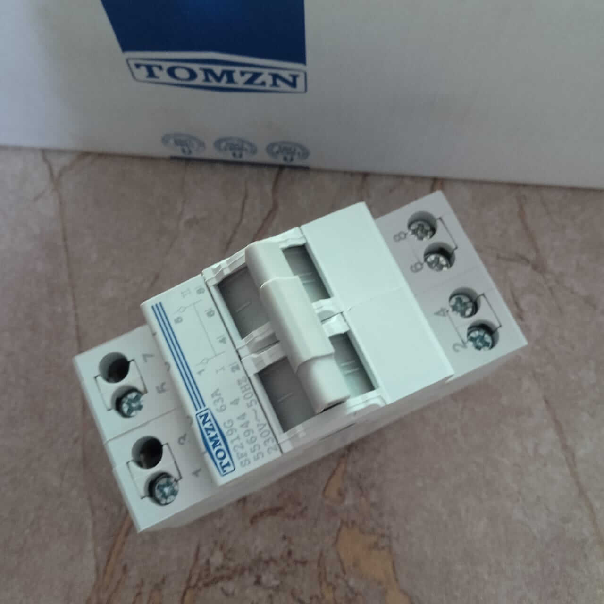
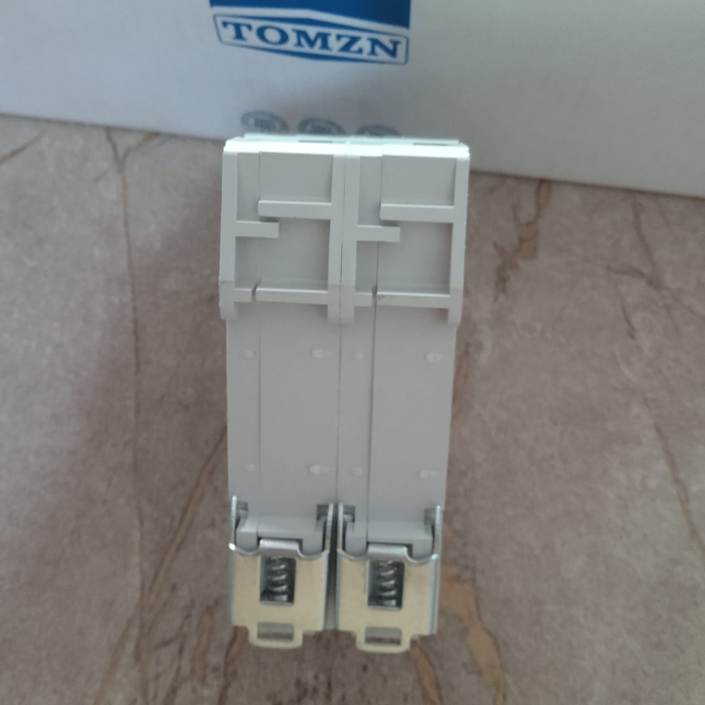
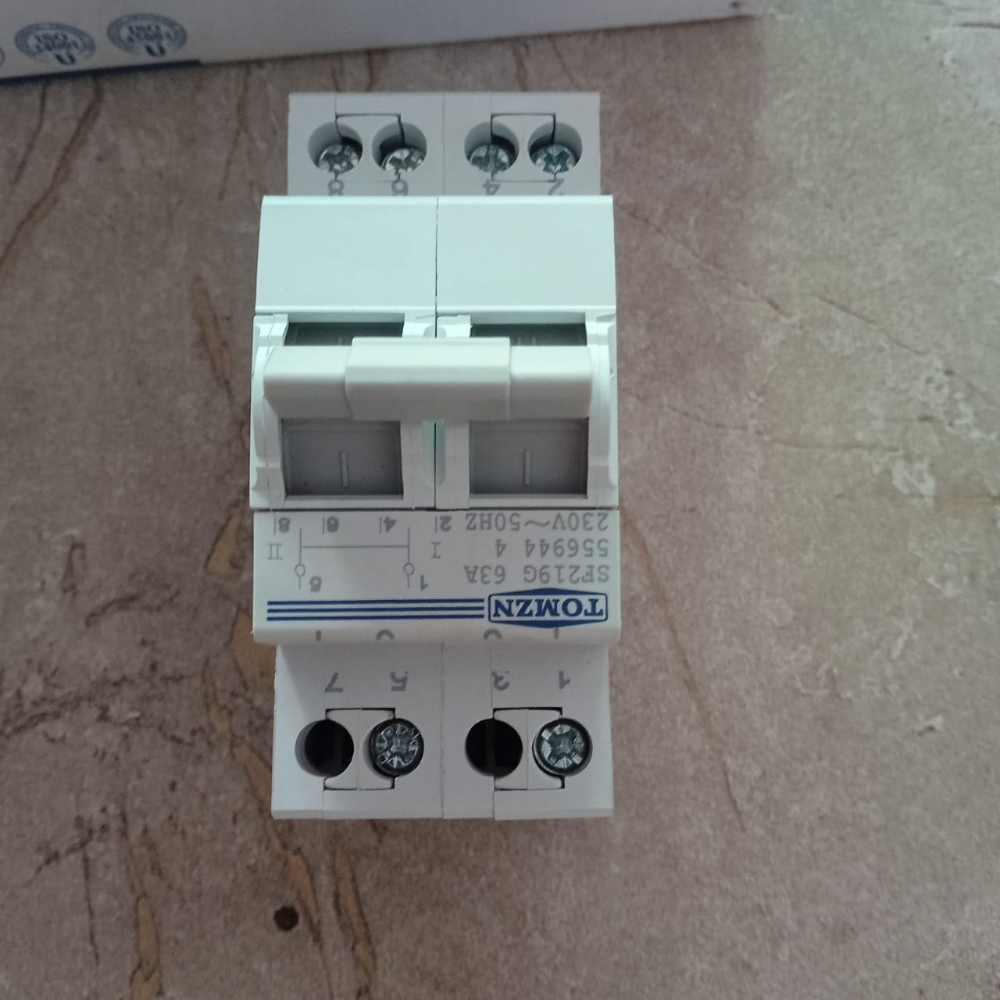
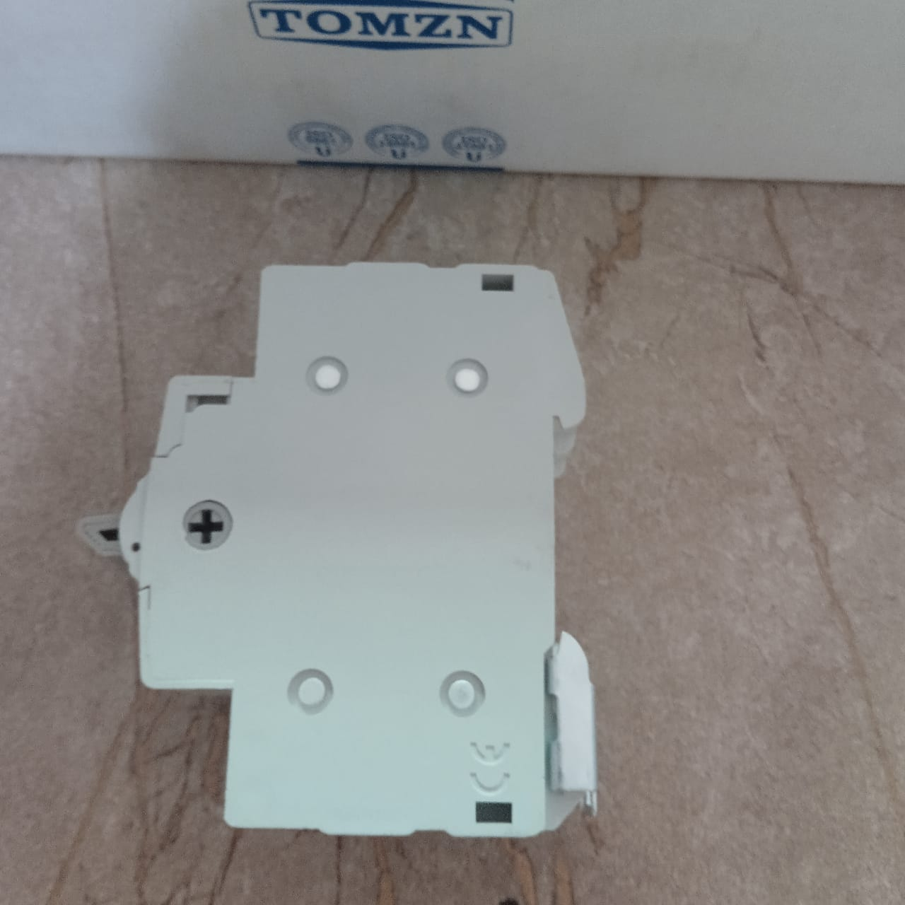
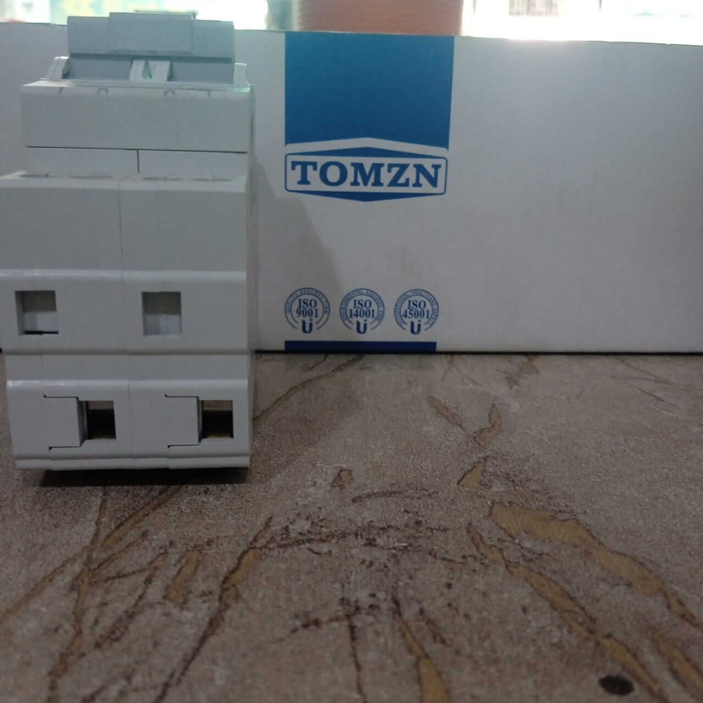

Dawood Trader





Home / T-Shirt
Tomzn AC Changeover Switch – 2 Pole, 63A, 230V, Generator & Main Supply Transfer Breaker
1399 Rs
| 1900 Rs
Product Detail
The Tomzn AC Changeover Switch (2 Pole, 63A) is a reliable solution for transferring power safely between two sources, such as Main Supply and Generator, Solar and Inverter, or Backup Systems. Designed for durability and safety, this breaker provides protection against overloads and short circuits, ensuring stable power distribution in both residential and industrial applications.
📌 Key Features
- Brand: Tomzn
- Type: AC Changeover Switch / Breaker
- Model: SE2196
- Poles: 2 Pole
- Rated Current: 63A
- Rated Voltage: 230V ~ 50Hz
- Function: Safe transfer between Main Supply, Generator, Solar or Inverter
- Protection: Overload & Short Circuit